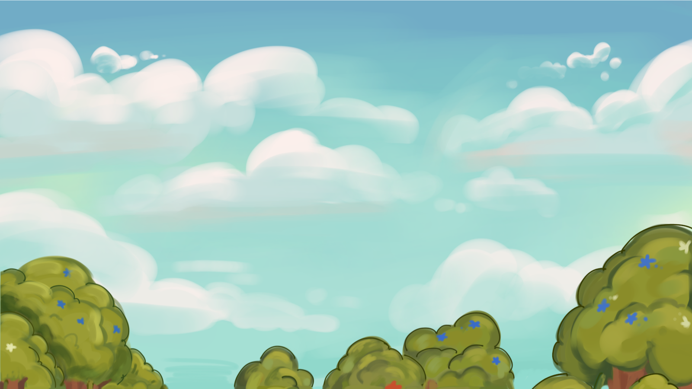
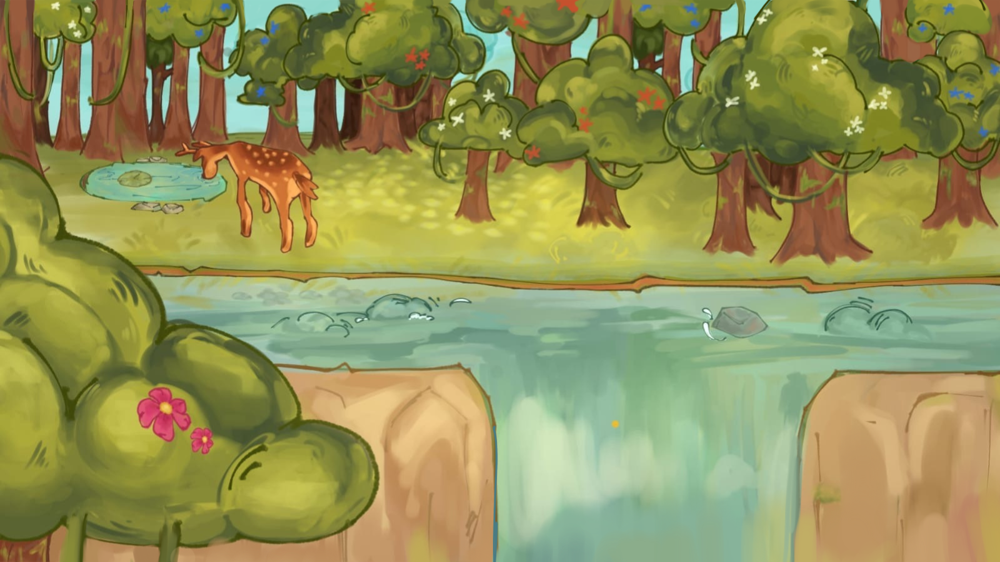
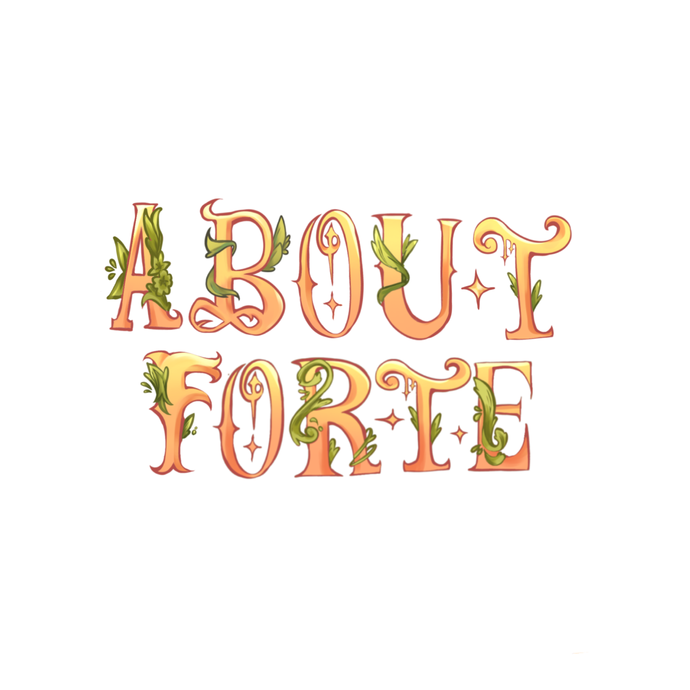
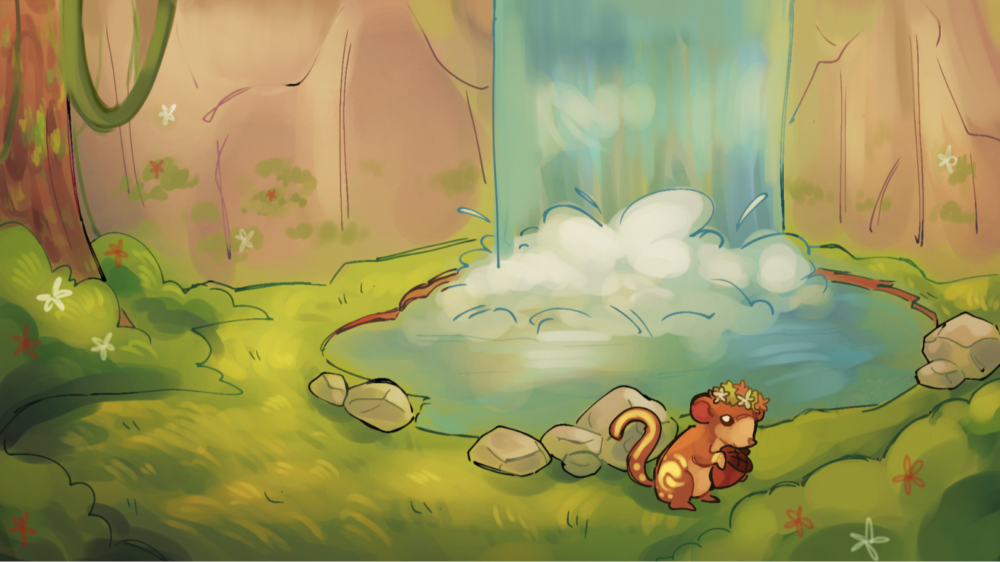

An annual event of "Information Technology for Language, Education & Sport" by SMAK 7 PENABUR Jakarta


SMAK 7 PENABUR Jakarta menganggap pendidikan non-akademik sangat penting. Oleh karena itu, SMAK 7 PENABUR Jakarta terus memfasilitasi siswa dalam mengembangkan bakat dan kemampuan berorganisasi melalui berbagai kegiatan di bawah OSIS. Salah satunya adalah FORTELATIONS, di mana siswa diharapkan aktif, kreatif, dan inovatif dalam membangun hubungan dengan siswa dari sekolah lain. Tema tahun ini, SYLVARA, yang terinspirasi dari keindahan dan keharmonisan alam, menggambarkan semangat yang bersinar dan berkembang.
